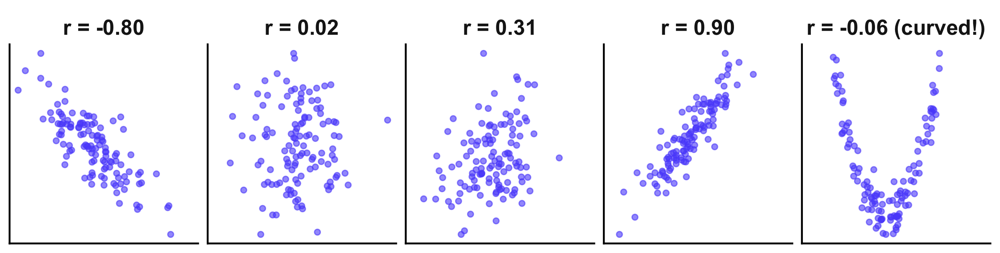
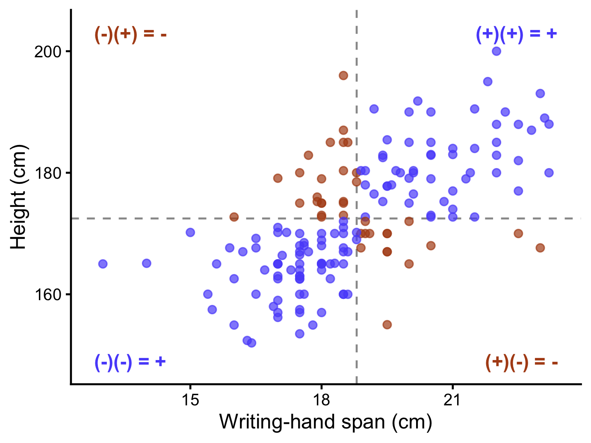
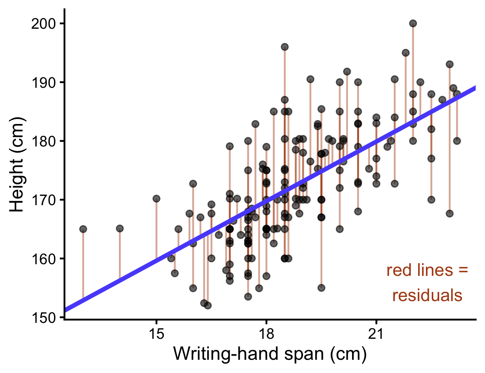
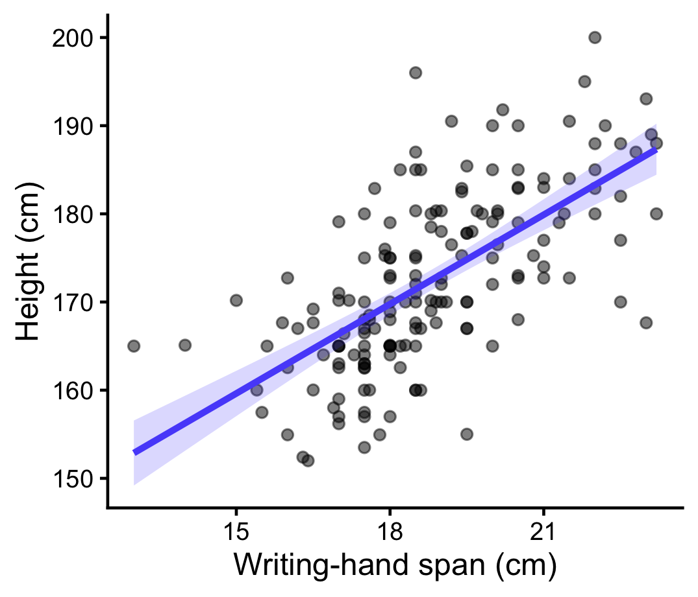
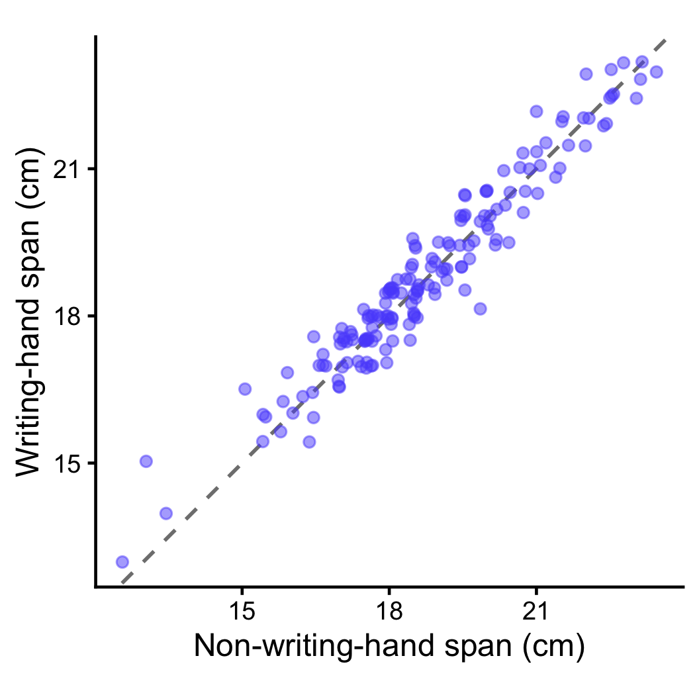
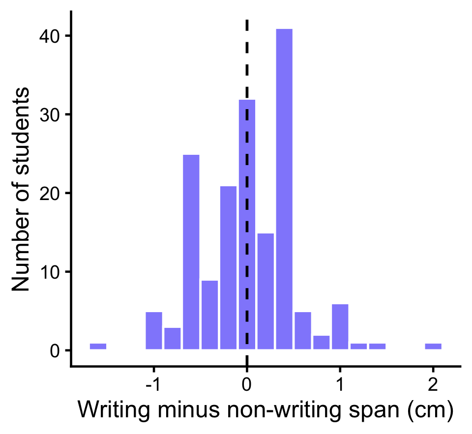
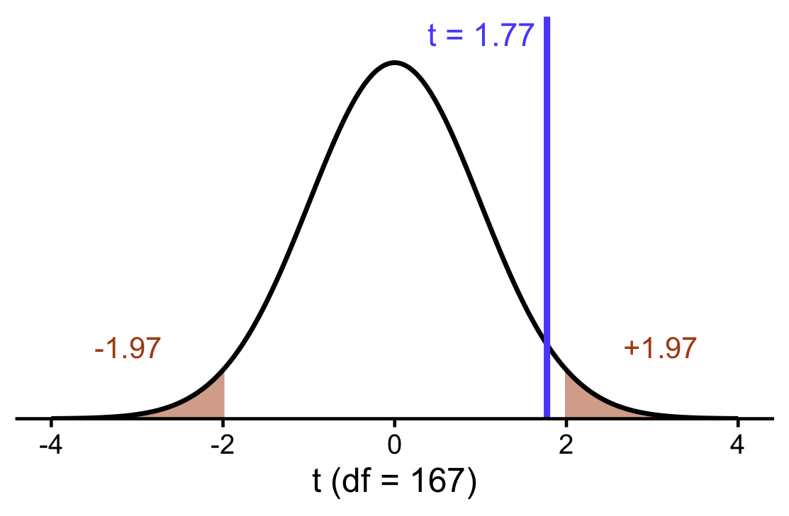
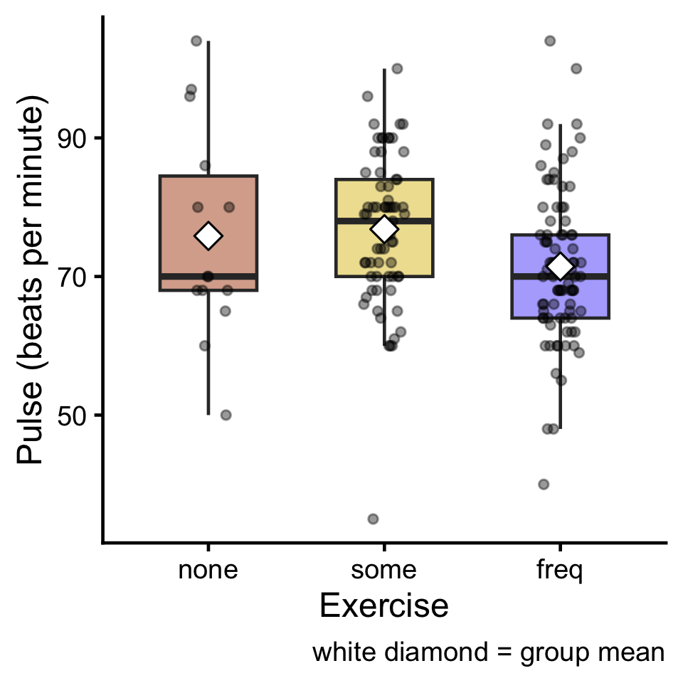
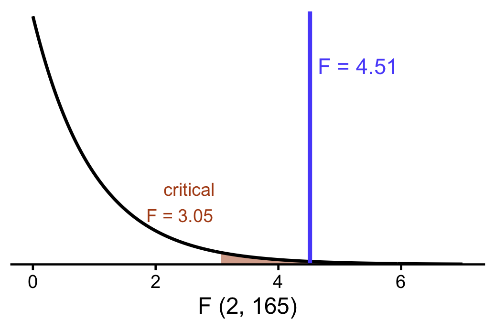

PSYC 2020-A01 / PSYC 6022-A01 | 2026-11-20 | Lab 13
Learning objectives:
R: cor(), lm(), predict(), scale(), plus a full run-through of t.test(paired = TRUE), aov(), and TukeyHSD()
Statistics: direction & strength of r, interpreting a slope, and going from hypotheses → decision → conclusion → APA write-up
.Rmd and a knitted Word / PDF / HTML fileToday we walk through every exam question in the same order, using a different dataset. Follow along in your own .Rmd and you’ll leave with a working example of each step.
| Research question | Analysis | Covered in | |
|---|---|---|---|
| Part 1 | How strongly are two continuous variables related, and can one predict the other? | Correlation & simple linear regression | Today |
| Part 2 | Do the same people score differently on two measures? | Paired-samples t-test | Lab 11 |
| Part 3 | Do three or more groups differ on a continuous outcome? | One-way ANOVA + Tukey’s HSD | Lab 12 |
Each part follows the same rhythm:
○ look at the data → state hypotheses → run the test → make a decision → explain it in words
168 intro statistics students at the University of Adelaide filled out a survey and had a few things measured. This is a cleaned version of MASS::survey that keeps only students with complete records. Download survey_data.csv
| Variable | Description |
|---|---|
id |
Student identifier |
sex |
Student sex (female, male) |
hand |
Writing hand (left, right) |
smoke |
How much the student smokes (never, occasional, regular, heavy) |
exercise |
How often the student exercises (none, some, freq = frequently) |
age |
Age (years) |
height |
Height (cm) |
pulse |
Pulse rate (beats per minute) |
wr_hand |
Span of the writing hand, tip of thumb to tip of little finger (cm) |
nw_hand |
Span of the non-writing hand (cm) |
Bigger people tend to have bigger hands.
How strongly is a student’s writing-hand span related to their height, and can hand span be used to predict height?
| Role | Variable |
|---|---|
| Outcome (y, vertical axis) | height |
| Predictor (x, horizontal axis) | wr_hand |
Two continuous variables → correlation (how strongly related?) and simple linear regression (can x predict y?)
id sex hand smoke exercise age height pulse wr_hand nw_hand
1 1 female right never some 18.2 173.00 92 18.5 18.0
2 2 male left regular none 17.6 177.80 104 19.5 20.5
3 3 male right never some 23.7 165.00 35 20.0 20.0
4 4 female right never some 21.0 172.72 64 18.0 17.7
5 5 male right never freq 18.8 182.88 83 17.7 17.7
6 6 female right never freq 35.8 157.00 74 17.0 17.3'data.frame': 168 obs. of 10 variables:
$ id : int 1 2 3 4 5 6 7 8 9 10 ...
$ sex : chr "female" "male" "male" "female" ...
$ hand : chr "right" "left" "right" "right" ...
$ smoke : chr "never" "regular" "never" "never" ...
$ exercise: chr "some" "none" "some" "some" ...
$ age : num 18.2 17.6 23.7 21 18.8 35.8 19 22.3 28.5 17.5 ...
$ height : num 173 178 165 173 183 ...
$ pulse : int 92 104 35 64 83 74 72 90 80 66 ...
$ wr_hand : num 18.5 19.5 20 18 17.7 17 20 18.5 17 19.5 ...
$ nw_hand : num 18 20.5 20 17.7 17.7 17.3 19.5 18.5 17.2 20.2 ... age height pulse wr_hand
Min. :16.90 Min. :152.0 Min. : 35.00 Min. :13.0
1st Qu.:17.70 1st Qu.:165.0 1st Qu.: 66.75 1st Qu.:17.5
Median :18.60 Median :170.6 Median : 72.00 Median :18.5
Mean :20.44 Mean :172.5 Mean : 74.02 Mean :18.8
3rd Qu.:20.20 3rd Qu.:180.0 3rd Qu.: 80.00 3rd Qu.:20.0
Max. :70.40 Max. :200.0 Max. :104.00 Max. :23.2
nw_hand
Min. :12.50
1st Qu.:17.50
Median :18.50
Mean :18.73
3rd Qu.:20.00
Max. :23.50 ⓘ The file path is relative to your .Rmd, so keep the CSV in the same folder (or a data/ subfolder). Other options: dim(), names(), glimpse(), psych::describe()
R reads text columns as characters and sorts groups alphabetically:
factor() with levels = sets the order you want (none → some → freq):
○ Run it once, right after importing, so every table, plot, ANOVA, and Tukey output in Part 3 reads in a natural order
○ Spelling must match the data exactly: a misspelled level turns those rows into NA
Pearson’s \(r\): the direction and strength of the linear relationship between two continuous variables, from −1 to +1

○ Sign = direction: + both rise together; − one rises as the other falls
○ Size (how close to ±1) = strength: how tightly points hug a straight line
○ \(r\) only sees straight lines: the last panel has a strong pattern but \(r \approx 0\), so always plot first
What do you see? Points rise from left to right, in a fairly tight cloud with no curve
○ Order doesn’t matter: cor(x, y) = cor(y, x)

Dashed lines = the two means
○ Above-average hand and above-average height: \((+)(+) = +\)
○ Below on both: \((-)(-) = +\)
○ Above on one, below on the other: product is \(-\)
130 of the 168 students land in a + quadrant, so the products add up to a positive \(r\)
Direction = sign of \(r\)
○ \(+\): as one goes up, so does the other
○ \(-\): as one goes up, the other goes down
Strength = size of \(|r|\) (Cohen’s rough guidelines)
| \(|r|\) | Strength |
|---|---|
| ≈ .10 | weak |
| ≈ .30 | moderate |
| ≥ .50 | strong |
Our result: \(r\) = .65 → positive and strong
The scatterplot and \(r\) = .65 show a strong, positive linear relationship between writing-hand span and height: students with wider hand spans tend to be taller.
ⓘ Use both pieces of evidence: the plot shows the shape and any outliers, \(r\) puts a number on it
ⓘ Correlation ≠ causation: stretching your hand won’t make you taller!
Give cor() several columns at once and it returns every pairwise correlation:
wr_hand nw_hand height pulse
wr_hand 1.00 0.97 0.65 -0.01
nw_hand 0.97 1.00 0.63 -0.02
height 0.65 0.63 1.00 -0.08
pulse -0.01 -0.02 -0.08 1.00How to read it
○ Diagonal = 1 (each variable with itself): skip it
○ The two triangles are mirror images: read just one
Strongest = largest \(|r|\): wr_hand & nw_hand (.97), since your two hands are nearly the same size
Weakest = closest to 0: wr_hand & pulse (−.01), basically no relationship
ⓘ Strength ignores the sign: \(r\) = −.08 is stronger than \(r\) = −.01. If your data had missing values, add use = "complete.obs"
\[\hat{y} = b_0 + b_1 x\]
○ \(\hat{y}\) = predicted height
○ \(b_0\) = intercept: predicted \(y\) when \(x = 0\)
○ \(b_1\) = slope: change in predicted \(y\) for every 1-unit increase in \(x\)
“Best” line = least squares: the line that makes the sum of squared residuals as small as possible
\[\sum (y_i - \hat{y}_i)^2\]

\(H_0\): \(\beta_1 = 0\)
○ Hand span does not predict height (the population line is flat)
\(H_1\): \(\beta_1 \neq 0\)
○ Hand span does predict height (the population line has a nonzero slope)
ⓘ \(\beta_1\) (Greek) is the population slope we’re testing; \(b_1\) is the slope we estimate from our sample
ⓘ lm() tests this two-tailed by default
lm(outcome ~ predictor, data = ...): same y ~ x formula as the plot
Call:
lm(formula = height ~ wr_hand, data = survey)
Residuals:
Min 1Q Median 3Q Max
-19.8332 -4.8332 -0.4516 4.6714 24.5453
Coefficients:
Estimate Std. Error t value Pr(>|t|)
(Intercept) 108.9530 5.7781 18.86 <2e-16 ***
wr_hand 3.3785 0.3057 11.05 <2e-16 ***
---
Signif. codes: 0 '***' 0.001 '**' 0.01 '*' 0.05 '.' 0.1 ' ' 1
Residual standard error: 7.583 on 166 degrees of freedom
Multiple R-squared: 0.4238, Adjusted R-squared: 0.4204
F-statistic: 122.1 on 1 and 166 DF, p-value: < 2.2e-16summary() Output○ Estimate: \(b_0\) = 108.95 (intercept), \(b_1\) = 3.38 (slope)
○ Std. Error: how much each estimate would bounce around from sample to sample
○ t value = Estimate ÷ Std. Error (3.3785 ÷ 0.3057 = 11.05)
○ Pr(>|t|): p-value for \(H_0: \beta = 0\)
○ df = \(n - 2\) = 166 (we estimated two things: \(b_0\) and \(b_1\))
○ \(R^2\) = .42: hand span explains 42% of the variability in height. With one predictor, \(R^2 = r^2\) (.651² = .42)
○ The F-test at the bottom tests the whole model. With one predictor, \(F = t^2\) (11.05² = 122.1)
Template: For every 1-[unit] increase in [x], [y] is predicted to [increase / decrease] by [\(b_1\)] [units].
For every 1-cm increase in writing-hand span, predicted height increases by 3.38 cm. The slope is significant, \(b\) = 3.38, \(t\)(166) = 11.05, \(p\) < .001, so we reject \(H_0\): hand span significantly predicts height.
ⓘ The intercept (108.95 cm) is the predicted height for a hand span of 0 cm. Nobody has a 0-cm hand, so the intercept just anchors the line. Don’t over-interpret it

add geom_smooth(method = "lm") to draw the line
What height would we predict for hand spans of 16, 18, and 20 cm?
By hand with the coefficients: \(\hat{y} = b_0 + b_1 x\)
○ The column in newdata must have exactly the same name as the predictor (wr_hand)
○ Each extra 2 cm of hand span adds 2 × 3.38 = 6.76 cm of predicted height
○ Only predict inside the range you observed (13 to 23.2 cm here)
\[z = \frac{x - \bar{x}}{s}\]
mean sd
0 1 mean sd
0 1 ○ scale() returns a matrix, so wrap it in as.numeric() to store a plain column
Most of us use our writing hand far more than the other one.
Is a student’s writing-hand span different from their non-writing-hand span?
Every student has two scores, wr_hand and nw_hand, so the scores come in pairs
○ above the dashed line: writing hand wider (79 students)
○ below: non-writing hand wider (64)
○ on it: same span (25)

For each student, \(D\) = wr_hand − nw_hand
\(H_0\): \(\mu_D = 0\)
○ On average, the two hands have the same span
\(H_1\): \(\mu_D \neq 0\)
○ On average, the two hands’ spans differ
ⓘ Hypotheses are about the population mean difference (\(\mu_D\)), not our sample’s \(\bar{d}\)
Paired-samples (dependent) t-test, two-tailed
○ Paired: the same 168 students give both measurements, so each wr_hand score is matched to one nw_hand score. These are not two independent groups
○ Two-tailed: the question asks whether the spans are different, not whether one is larger
| Same people (or matched units) measured twice? | Number of groups / conditions | Test |
|---|---|---|
| Yes | 2 | Paired-samples t |
| No | 2 | Independent-samples t |
| No | 3 or more | One-way ANOVA |
Direction stated in the question (“higher,” “decrease”) → one-tailed. Just “different” → two-tailed
[1] 18.80238[1] 18.73155[1] 0.07083333ⓘ When a question says display the result, save it and print it. Shortcut: wrapping an assignment in parentheses does both, e.g., (mean_wr <- mean(survey$wr_hand))
id wr_hand nw_hand hand_diff
1 1 18.5 18.0 0.5
2 2 19.5 20.5 -1.0
3 3 20.0 20.0 0.0
4 4 18.0 17.7 0.3
5 5 17.7 17.7 0.0
6 6 17.0 17.3 -0.3○ Keep the same order as 2.3 (writing − non-writing), so a positive difference = writing hand wider
○ Two columns are now one, so a paired t-test is a one-sample t-test of hand_diff against 0

\[\bar{d} = \frac{\sum d_i}{n}\]
\[s_d = \sqrt{\frac{\sum (d_i - \bar{d})^2}{n - 1}}\]
\[SE_{\bar{d}} = \frac{s_d}{\sqrt{n}}\]
ⓘ The mean of the differences = the difference of the means (0.0708 both ways, compare with 2.3)
ⓘ \(n\) = number of pairs (168 students), not number of scores (336)
\[df = n - 1 = 168 - 1 = 167\]
Reject \(H_0\) if \(|t| > 1.97\)
ⓘ Reminder from Lab 11: a one-tailed test puts all of \(\alpha\) in one tail, qt(.95, df = 167) = 1.65
\[t = \frac{\bar{d}}{SE_{\bar{d}}}\]

Decision: \(|1.77| < 1.97\) (\(p\) = .078 > .05) → fail to reject \(H_0\)
Conclusion: Students’ writing-hand span (M = 18.80 cm) was not significantly different from their non-writing-hand span (M = 18.73 cm), \(t\)(167) = 1.77, \(p\) = .078.
t.test()
Paired t-test
data: survey$wr_hand and survey$nw_hand
t = 1.7737, df = 167, p-value = 0.07794
alternative hypothesis: true mean difference is not equal to 0
95 percent confidence interval:
-0.008012046 0.149678713
sample estimates:
mean difference
0.07083333 Same \(t\)(167) = 1.77, \(p\) = .078 ✓
95% CI for \(\mu_D\): [−0.01, 0.15] includes 0, which agrees with failing to reject \(H_0\)
ⓘ Order matters: R computes first − second, the same order as hand_diff
ⓘ Same result: t.test(survey$hand_diff, mu = 0)
ⓘ “Fail to reject” ≠ “the hands are identical.” We just don’t have enough evidence of a difference
\[d = \frac{\bar{d}}{s_d}\]
| \(|d|\) | Size |
|---|---|
| 0.2 | small |
| 0.5 | medium |
| 0.8 | large |
\(d\) = 0.14 is below even the “small” benchmark of 0.2: the average difference between the two hands is only about one-seventh of a standard deviation. A negligible effect.
ⓘ \(t\) grows with \(n\), but \(d\) doesn’t. \(d\) tells you how big a difference is, no matter how many people you measured
People who exercise often tend to have lower heart rates.
Does pulse rate differ across students who exercise not at all, some of the time, or frequently?
○ Outcome: pulse (continuous)
○ Grouping variable: exercise (3 groups, already put in order back in 1.1)
3 or more independent groups, one continuous outcome → one-way ANOVA
\(H_0\): \(\mu_{none} = \mu_{some} = \mu_{freq}\)
○ Average pulse is the same in all three exercise groups
\(H_1\): at least one group mean differs from the others
⚠ Not \(H_1: \mu_{none} \neq \mu_{some} \neq \mu_{freq}\). \(H_1\) is true even if only one group stands out
# A tibble: 3 × 4
exercise n mean sd
<fct> <int> <dbl> <dbl>
1 none 14 75.9 15.4
2 some 69 76.8 10.7
3 freq 85 71.4 11.0Base R alternative:
tapply(survey$pulse, survey$exercise, mean)
○ Frequent exercisers have the lowest average pulse
○ Group sizes are unequal (14 / 69 / 85). That’s fine for ANOVA

ANOVA assumes the groups have (roughly) equal variances. Pick one method, name it, and state your conclusion
none some freq
15.37659 10.74293 10.99514 [1] 1.431322Largest SD ÷ smallest SD = 1.43, which is less than 2 → assumption satisfied
Levene's Test for Homogeneity of Variance (center = median)
Df F value Pr(>F)
group 2 1.3277 0.2679
165 \(F\)(2, 165) = 1.33, \(p\) = .268 → not significant → assumption satisfied
ⓘ Install once in the console: install.packages("car")
Here a non-significant result is the good news: \(H_0\) for these tests is that the variances are equal.
aov(outcome ~ group, data = ...), then summary()
Df Sum Sq Mean Sq F value Pr(>F)
exercise 2 1153 576.6 4.514 0.0123 *
Residuals 165 21077 127.7
---
Signif. codes: 0 '***' 0.001 '**' 0.01 '*' 0.05 '.' 0.1 ' ' 1ⓘ Check the Df next to your grouping variable: it should be (number of groups − 1) = 2. If it says 1, R treated your groups as a number (e.g., groups coded 1/2/3). Convert with factor() first!
\(k\) = 3 groups, \(N\) = 168 students
| Formula | Value | |
|---|---|---|
| \(df_{between}\) | \(k - 1\) | 3 − 1 = 2 |
| \(df_{within}\) | \(N - k\) | 168 − 3 = 165 |
| \(df_{total}\) | \(N - 1\) | 168 − 1 = 167 |
ⓘ \(df_{between} + df_{within} = df_{total}\): 2 + 165 = 167
\[MS = \frac{SS}{df} \qquad MS_{between} = \frac{SS_{between}}{k - 1} \qquad MS_{within} = \frac{SS_{within}}{N - k}\]
ms_between ms_within
576.6328 127.7372 1153.27 ÷ 2 = 576.6 and 21076.64 ÷ 165 = 127.7 ✓ match the Mean Sq column
ⓘ The printed table rounds SS (1153, 21077). Pulling the values out of the table object, as above, avoids rounding error
\[F = \frac{MS_{between}}{MS_{within}}\]
576.6 ÷ 127.7 = 4.51 ✓ matches the F value column
○ The variability between exercise groups is about 4.5 times the variability within them
[1] 3.050787[1] 0.01233843ⓘ F only has an upper tail (it’s a ratio of variances), so use .95, not .975

Decision: 4.51 > 3.05 (\(p\) = .012 < .05) → reject \(H_0\)
Conclusion: Pulse rate differs significantly across exercise groups, \(F\)(2, 165) = 4.51, \(p\) = .012. ANOVA tells us some difference exists, but not which groups differ → Tukey’s HSD
Tukey multiple comparisons of means
95% family-wise confidence level
Fit: aov(formula = pulse ~ exercise, data = survey)
$exercise
diff lwr upr p adj
some-none 0.9689441 -6.866266 8.804154 0.9539542
freq-none -4.4100840 -12.119905 3.299737 0.3681991
freq-some -5.3790281 -9.710410 -1.047646 0.0105258○ diff = first group’s mean − second group’s mean
○ lwr, upr = 95% CI, adjusted for making 3 comparisons
○ p adj < .05 (CI excludes 0) → significant
| Comparison | Diff. (bpm) | \(p\) adj | Significant? |
|---|---|---|---|
| some − none | 0.97 | .954 | no |
| freq − none | −4.41 | .368 | no |
| freq − some | −5.38 | .011 | yes |
○ Frequent exercisers have the lowest pulse (M = 71.45), significantly lower than the “some” group (M = 76.83)
○ The “none” group (M = 75.86) did not differ significantly from either group. With only 14 students, its confidence intervals are very wide
Overall: exercising frequently, not just sometimes, goes with a lower pulse
ⓘ Not significant ≠ no difference: small groups have low power
ⓘ This is survey data, not an experiment, so we can’t say exercise causes a lower pulse
Include: the test, \(F\)(\(df_{between}\), \(df_{within}\)), \(p\), each group’s M and SD, and what Tukey’s HSD showed, in full sentences
A one-way ANOVA was conducted to examine whether pulse rate differed by how often students exercised. Pulse rate differed significantly across exercise groups, F(2, 165) = 4.51, p = .012. Students who exercised frequently (M = 71.45, SD = 11.00) had a lower average pulse than students who exercised some of the time (M = 76.83, SD = 10.74) or not at all (M = 75.86, SD = 15.38). Tukey’s HSD post hoc comparisons showed that the frequent group’s pulse was significantly lower than the some group’s (p = .011). The no-exercise group did not differ significantly from either the some group (p = .954) or the frequent group (p = .368).
APA 7 reminders
○ Italicize statistical symbols: F, t, r, p, M, SD
○ No leading zero for values that can’t exceed 1: p = .012, r = .65 (but M = 0.07)
○ Report exact p to 2–3 decimals; write p < .001 when it’s tiny
○ Optional extra: effect size \(\eta^2 = SS_{between} / SS_{total}\) = 1153.27 / 22229.90 = .05
R & RMarkdown
○ Knit early and often: one error anywhere stops the knit
○ Every object must be created inside the .Rmd (code you ran only in the console doesn’t count)
○ Keep the CSV next to your .Rmd and import it with read.csv("file.csv")
○ Run install.packages() in the console, never in the .Rmd
○ Print every value you’re asked to calculate or display
Statistics
○ Run factor() right after importing
○ Scatterplot: outcome on the y-axis (y ~ x)
○ Strength of r = size of \(|r|\); skip the diagonal of the matrix
○ Paired t: \(n\) = number of pairs; keep the difference order consistent
○ Say “fail to reject \(H_0\),” never “accept \(H_0\)”
○ ANOVA \(H_1\): “at least one mean differs”
○ Always follow a decision with a plain-English conclusion
Same steps, new data: palmerpenguins (you met them in Lab 12)
flipper_length_mm related to bill_length_mm? Use flipper length to predict bill length, then predict bill length for flippers of 190, 200, and 210 mmbill_depth_mm differ across species? Check the equal-variance assumption, run the ANOVA, then Tukey’s HSDCheck:
○ Correlation: cor(x, y) → sign = direction, \(|r|\) = strength; always check the scatterplot
○ Regression: lm(y ~ x) → slope = change in predicted y per 1-unit increase in x; predict() for new values
○ Paired t: one difference score per person, \(df = n - 1\), \(d = \bar{d} / s_d\)
○ ANOVA: aov(y ~ group), \(MS = SS / df\), \(F = MS_{between} / MS_{within}\), then TukeyHSD() to see which groups differ
○ Every test: hypotheses → decision → conclusion in words